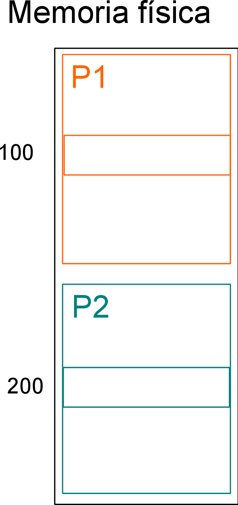
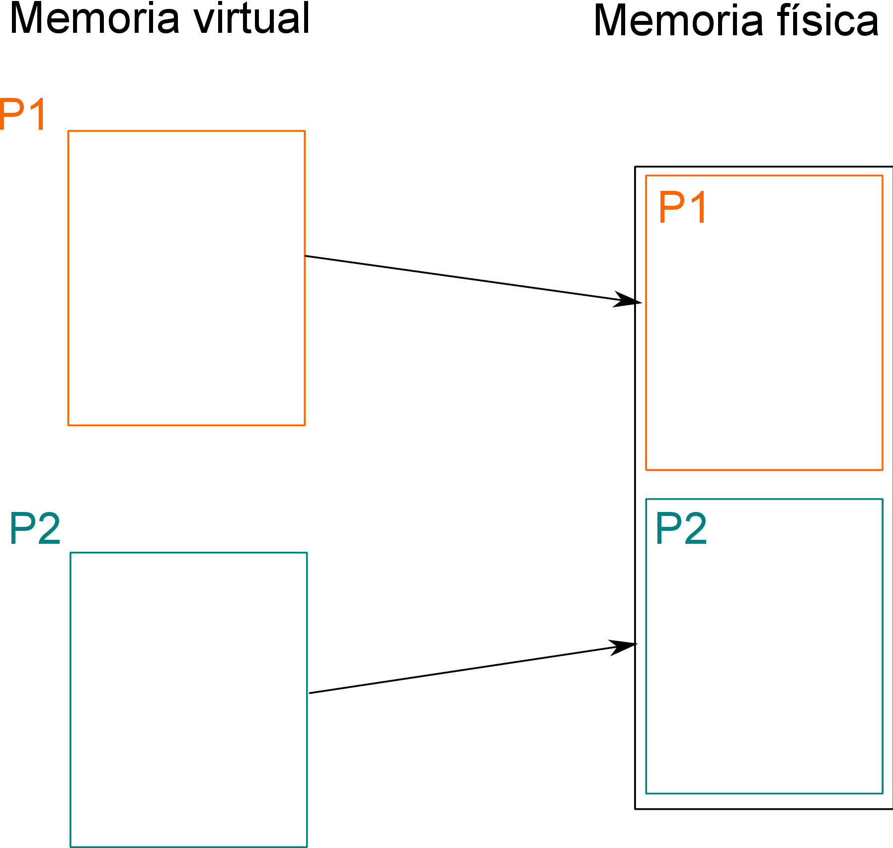
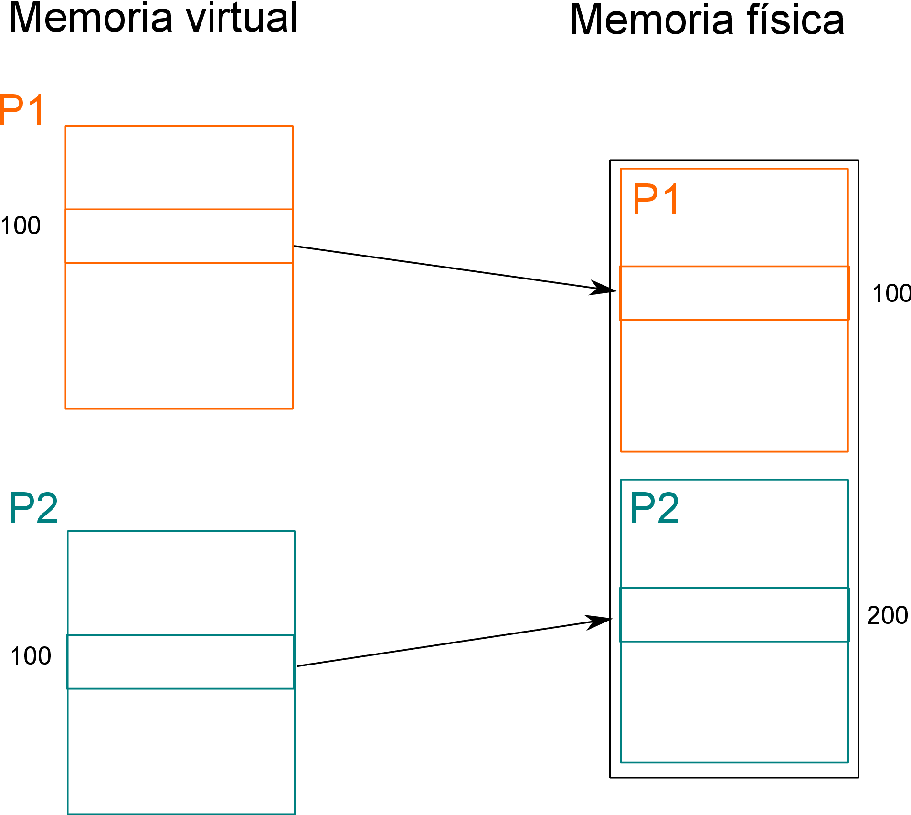
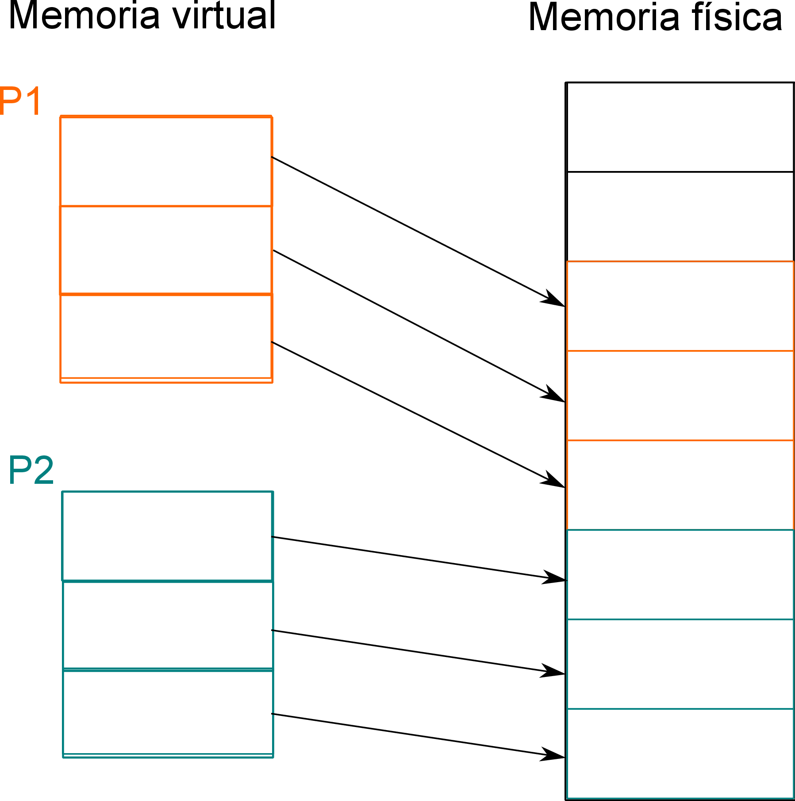
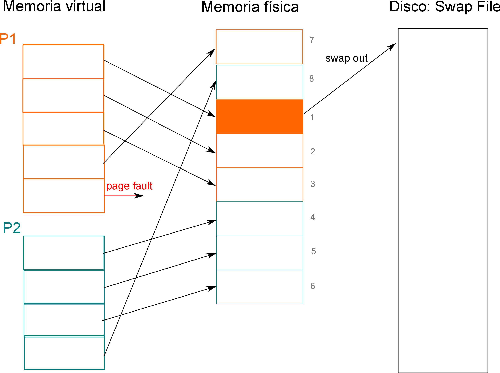

Figura 17: Secuencia de procesos de un sistema con cooperative scheduling.
IIC2343 Arquitectura de Computadores
Multiprogramación
©Alejandro Echeverría, Hans-Albert Löbel
Una de las ventajas de tener una máquina multipropósito como un computador es la posibilidad de correr múltiples programas que realicen distintas operaciones. Para lograr que un computador ejecute y almacene múltiples programas son necesarias diversas mejoras y modificaciones al hardware.
El concepto de multiprogramación se refiere a la idea general de poder cargar múltiples programas dentro de un mismo computador para que sean ejecutados en un determinado momento. Para lograr manejar múltiples programas, es necesario primero definir que compone a un programa. En general, podemos decir que un programa está compuesto por dos partes: su representación en memoria que incluye el código, datos y stack del programa, y su estado de ejecución que incluye los valores almacenados en los registros de la CPU (PC, registros acumuladores, SP, Status register, etc.) que indican el estado actual del programa en la máquina. Para lograr trabajar con múltiples programas, entonces, es necesario permitir el manejo de múltiples representaciones en memoria y de múltiples estados de ejecución.
Supongamos que queremos representar en memoria dos programas que originalmente funcionaban como programa único de un determinado computador. Los códigos de ambos programas (P1 y P2) se muestran a continuación:
P1:
P2:
Ambos programas tienen sus instrucciones y datos almacenados en memoria. En este caso particular, además, ambos programas ocupan las mismas direcciones de memoria para almacenar sus tres variables. Es claro que no es posible utilizar el mismo espacio físico de memoria para ambos programas, por lo que es necesario desarrollar alguna modificación para poder almacenar los dos programas.
Una primera solución que se puede pensar es modificar los programas de manera que las instrucciones y datos estén en ubicaciones distintas de memoria. Con este esquema, se podría almacenar en una parte de la memoria un programa completo, y en otra parte otro programa, como se observa en el diagrama de la figura 1:
Para lograr que este esquema funcione, es necesario colocar el código del segundo programa luego del espacio del primer programa y además es necesario modificar las posiciones de las direcciones de memoria de las variables usadas por el programa, por ejemplo a las direcciones 200, 201 y 202, como se observa en el siguiente código del programa 2 modificado:
P2:
Con este esquema entonces, es necesario modificar las direcciones de memoria originales de al menos uno de los programas, como se observa en el siguiente diagrama:

Este esquema presenta tres problemas importantes:
Para solucionar estas tres dificultades presentadas por este esquema simple, los sistemas de multiprogramación utilizan el concepto de memoria virtual. En un sistema de memoria virtual, se distinguen las direcciones que ocupa internamente un programa (direcciones virtuales) de las direcciones físicas donde se almacena la información. Cada programa tendrá un espacio virtual de direcciones, que corresponde al tamaño del espacio de direcciones de la memoria completa habitualmente. De esta forma, cada programa tiene la percepción de ser el único programa en la máquina.
En la práctica sin embargo, cada programa sigue estando mapeado a un lugar físico distinto en la memoria física, pero a nivel del programa esto es transparente y por tanto el programa no se preocupa de saber en que ubicación física está, ya que solo le interesa su espacio virtual (figura 3).

De esta forma, en el ejemplo de los programas anteriores no es necesario modificar las direcciones del programa 2, ya que para éste, sus variables siguen estando ubicadas en las direcciones 100, 101 y 102, de su espacio virtual. En la práctica, estas direcciones son mapeadas internamente a otras ubicaciones físicas (200, 201 y 202 por ejemplo), pero a nivel del código esto no afecta (figura 3).

El sistema de memoria virtual es capaz de solucionar los tres problemas antes descritos:
Para implementar un sistema de memoria virtual, es necesario agregar a la CPU un componente de hardware que realice la traducción de una dirección virtual a una dirección física. Este componente se conoce como Memory Management Unit (MMU) y es parte de la CPU. La MMU se encargará de traducir las solicitudes de memoria que vengan desde la CPU, mapeando para el programa actual la dirección física correspondiente.
En el caso de los programas anteriores, una solicitud a la dirección virtual 100 de parte del programa 2, será traducida como solicitud a la dirección física 200:
Una solicitud a la dirección virtual 100 de parte del programa 1, en cambio, será traducida como solicitud a la dirección física 100.
Para realizar la traducción la MMU debe almacenar una tabla que tenga la asociación virtual - física. La opción más simple para esto es almacenar todos los pares de direcciones virtual-física, lo que en el caso de los programas 1 y 2 serían los siguientes:
| Dirección virtual | Dirección física |
| 100 | 100 |
| 101 | 101 |
| 102 | 102 |
| Dirección virtual | Dirección física |
| 100 | 200 |
| 101 | 201 |
| 102 | 202 |
El problema de almacenar todos los mapeos posibles está en que se necesita para cada programa una tabla con tantas entradas como direcciones virtuales disponibles hay, y por tanto se requeriría para cada programa un espacio de almacenamiento igual al tamaño de la memoria física, lo que claramente no es implementable en la práctica.
Para solucionar el problema del tamaño de la tabla de mapeo virtual-físico, se agrega el concepto de paginación. La paginación corresponde a dividir la memoria en bloques de palabras contiguos conocidos como páginas en el espacio virtual o marcos en el espacio físico. De esta manera, cada programa tendrá asociada una cierta cantidad de páginas de memoria virtual, las cuales estarán mapeadas a marcos físicos (figura 7). Con este esquema, las tablas de mapeo, denominadas tablas de páginas, pueden tener un tamaño razonable lo que permite implementar el sistema en la práctica.

Suponiendo por ejemplo una memoria física de 256 bytes y páginas de 32 bytes, se tendrían 8 marcos físicos posibles. Si los programas 1 y 2 del ejemplo anterior se quieren almacenar en esta memoria, y suponiendo que ocupan tres páginas virtuales, las posibles tablas de página serían las siguientes:
En un sistema de memoria virtual con paginación, la dirección de memoria será interpretada como dos partes: una que indica el número de página, y otra que indica el offset dentro de la página. En el caso anterior, al ser el espacio de direccionamiento de 8 bits (28 = 256 palabras en memoria), la dirección de 8 bits se dividirá en los 3 bits más significativos para indicar el número de página (23 = 8 páginas), y los 5 bits restantes para indicar el offset (25 = 32 palabras por página).
Para determinar la ubicación física de la dirección virtual 70 del programa 2, por ejemplo, se debe realizar los siguientes pasos:
Como se señaló previamente, la paginación se utiliza para reducir el tamaño de las tablas de mapeo. En los computadores personales el tamaño de página es habitualmente de 1KB (210 bytes). Pensando por ejemplo en un computador con 1GB (230 bytes) de memoria, se tendrían 230-10 = 220 = 1M páginas, es decir el tamaño de la tabla de página de cada programa sería alrededor de 1MB, lo que es una proporción razonable considerando el tamaño de la memoria.
Las tablas de página de cada programa contienen la información completa del mapeo del espacio virtual del programa al espacio físico. Esto quiere decir que se deben tener almacenadas entradas para todas las posibles páginas, aunque estas no estén utilizadas. Para diferenciar las páginas que están correctamente mapeadas a un marco físico de las que no, se agrega a la tabla de páginas un bit de validez el cual cuando tiene el valor 1 indica que esa entrada es válida, y cuando tiene el valor 0 indica que no lo es.
Para el ejemplo de los programas 1 y 2 antes vistos, las tablas de páginas completas serían las siguientes:
| Página virtual | Marco físico | Validez |
| 0 | 2 | 1 |
| 1 | 3 | 1 |
| 2 | 4 | 1 |
| 3 | x | 0 |
| 4 | x | 0 |
| 5 | x | 0 |
| 6 | x | 0 |
| 7 | x | 0 |
| Página virtual | Marco físico | |
| 0 | 5 | 1 |
| 1 | 6 | 1 |
| 2 | 7 | 1 |
| 3 | x | 0 |
| 4 | x | 0 |
| 5 | x | 0 |
| 6 | x | 0 |
| 7 | x | 0 |
Las tablas de páginas de todos los programas son almacenadas en la memoria principal, en el espacio correspondiente al sistema operativo que será el programa encargado de controlar qué programa está activo, como se verá más adelante. El problema de tener las tablas de página en memoria, es que para cada acceso a memoria de un programa dado, se requieren dos accesos en la práctica: uno para ir a buscar el mapeo virtual-físico en la tabla de página y otro para realizar el acceso real.
Para mejorar el rendimiento en los accesos a memoria, y evitar que siempre ocurra este doble acceso, se agrega una caché especialmente dedicada a almacenar entradas de tabla de página, la cual se conoce como Translation Lookaside Buffer (TLB). La TLB almacenará algunas de las entradas de la tabla de página del programa que actualmente está en ejecución. En el ejemplo anterior, un posible estado de una TLB de dos entradas para la tabla de páginas del programa 2 sería el siguiente:
La TLB tendrá el mismo funcionamiento que las cachés tradicionales, basándose en los principios de localidad de referencia espacial y temporal para mejorar el rendimiento de los accesos. En caso de ocurrir un hit en la caché, el acceso a memoria tomará el tiempo que se necesite en acceder a la TLB y el tiempo de acceso a memoria. En caso de ocurrir un miss en la caché, el acceso a memoria tomará el tiempo de acceso a la TLB, más el tiempo de ir a memoria a buscar la entrada a la tabla de página y traerla a caché, más el tiempo de acceso al valor real en memoria, es decir, al igual que con cualquier caché, el miss penalty será mayor que un acceso sin caché, por lo que es fundamental que el hit rate sea alto para que sea efectiva.
Una última situación a considerar en el manejo de memoria virtual corresponde a saber qué ocurre cuando un programa solicita acceso a una página de manera dinámica, mientras se está ejecutando. Al ocurrir esto, el programa le cede el control de la CPU al sistema operativo, el cual se encargará de mapear un marco físico disponible a una nueva página del programa, actualizando la tabla de página correspondiente.
Con este esquema un programa puede solicitar más memoria mientras está siendo ejecutado. Por ejemplo, en el caso anterior de los programas 1 y 2, podría ocurrir que el programa 1 solicite acceso a su página 3, y esta se mapee al marco 0, y que el programa 2 solicite acceso a su página 3, y está se mapee al marco 1, como se observa en el siguiente diagrama y las siguientes tablas de página:
| Página virtual | Marco físico | Validez |
| 0 | 2 | 1 |
| 1 | 3 | 1 |
| 2 | 4 | 1 |
| 3 | 0 | 1 |
| 4 | x | 0 |
| 5 | x | 0 |
| 6 | x | 0 |
| 7 | x | 0 |
| Página virtual | Marco físico | |
| 0 | 5 | 1 |
| 1 | 6 | 1 |
| 2 | 7 | 1 |
| 3 | 1 | 1 |
| 4 | x | 0 |
| 5 | x | 0 |
| 6 | x | 0 |
| 7 | x | 0 |
El problema ocurre si ahora uno de los programas quiere acceder a otra página, por ejemplo el programa 1 a la página 4. En este momento, la memoria física está ocupada completamente; es decir, al momento de ir a asociar un marco a la página 4 del programa 1, el sistema operativo se encuentra con que no hay marcos físicos disponibles. Esta situación se conoce como una falta de página o page fault:
Para solucionar esta situación, se utiliza el disco duro como almacenamiento de respaldo para los marcos de memoria. Para lograr esto se reserva un espacio especial en el disco, denominado swap file, el cual será utilizado para respaldar marcos. De esta forma cuando un programa requiere un marco, pero la memoria está completamente ocupada, se copiará un marco de memoria al disco para dejar espacio para la nueva solicitud. Este proceso de respaldo de memoria a disco se conoce como swap out. Para determinar que marco reemplazar, se utiliza un algoritmo de reemplazo, como por ejemplo FIFO, LFU o LRU. Se debe agregar un nuevo bit de información a la tabla de páginas, indicando si la página está en disco o no.
A continuación se muestra la secuencia de pasos desde que ocurre el swap out, hasta que se actualiza la tabla de páginas, asumiendo algoritmo de reemplazo FIFO:

| Página virtual | Marco físico | Validez | Disco |
| 0 | 2 | 1 | 1 |
| 1 | 3 | 1 | 0 |
| 2 | 4 | 1 | 0 |
| 3 | 0 | 1 | 0 |
| 4 | 2 | 1 | 0 |
| 5 | x | 0 | 0 |
| 6 | x | 0 | 0 |
| 7 | x | 0 | 0 |
Una vez actualizada la tabla y completado el respaldo, si ahora el programa 1 requiere acceso a la página 0, respaldada en disco, ocurrirá una falta de página debido a la invalidez de la entrada:
Al igual que en el caso anterior, se debe abrir espacio en memoria para el nuevo marco, para lo cual se realiza swap out del siguiente marco que corresponde respaldar, en este caso el marco 3:
El sistema operativo revisa si la página solicitada está en disco, en cuyo caso realiza un swap in de disco a memoria, restaurando el mapeo de la página original:
El nuevo estado de la memoria y de las tablas de página se observa a continuación:
| Página virtual | Marco físico | Validez | Disco |
| 0 | 3 | 1 | 0 |
| 1 | 3 | 1 | 1 |
| 2 | 4 | 1 | 0 |
| 3 | 0 | 1 | 0 |
| 4 | 2 | 1 | 0 |
| 5 | x | 0 | 0 |
| 6 | x | 0 | 0 |
| 7 | x | 0 | 0 |
Además de poder representar múltiples programas en memoria, es necesario poder ejecutar múltiples programas en la CPU. Asumiendo que se trata de un sistema uniprocesador, solamente un programa podrá estar corriendo en un determinado instante de tiempo en el computador. Para poder ejecutar más programas, es necesario de alguna forma ir intercalando la ejecución de estos.
Para revisar que posibilidades hay para implementar la ejecución de múltiples programas en un procesador, es necesario primero definir el concepto de proceso. Un proceso corresponde a la representación de memoria de un programa más su estado actual en la CPU. De esta forma, el objetivo de la multiprogramación es lograr que distintos procesos puedan ejecutarse en el computador.
Existen distintas formas de lograr la ejecución de múltiples procesos en un computador. La forma más simple se conoce como batch processing. En un esquema batch, la idea es que cada proceso se ejecutará completamente y una vez que termine le entregará la CPU al siguiente programa. Para intermediar el acceso a la CPU, el proceso no entrega directamente el control al siguiente, sino que le entrega primero el control del computador al sistema operativo mediante un supervisor call, instrucción especial que permite ceder el control de la CPU y entregárselo al SO, notificando el fin del proceso o end of process (figura 16).
El sistema operativo, a pesar de ser un proceso más, tiene privilegios especiales. Para diferenciar al sistema operativo de los procesos normales, se agrega a la CPU un bit en el registro de status que indica el modo en que está funcionando la CPU: modo supervisor o modo usuario. Cuando el sistema operativo esté corriendo, la CPU estará en modo supervisor; en cualquier otro caso, estará en modo usuario.
Dentro de los permisos especiales que tiene el sistema operativo al ejecutar en modo supervisor está la capacidad de definir la ubicación de la tabla de páginas que se utilizará por el siguiente programa a ejecutar. Para esto, se agrega también a la CPU un registro especial denominado Page Table Base Register (PTBR) el cual solo puede ser escrito en modo supervisor, e indicará la posición inicial de la tabla de página actualmente usada.
El sistema operativo debe realizar una serie de pasos desde que recibe el control de parte del proceso 1, hasta que se lo entrega al proceso 2:
El problema de un sistema batch está en que es necesario esperar que un proceso termine para poder ejecutar otro. En algunas circunstancias esto puede ser suficiente, pero si se quiere poder estar realizando distintas operaciones en paralelo, este sistema no funciona. Para que se pueda lograr la ilusión de paralelismo, es necesario que los procesos vayan intercalándose en su uso de la CPU, y que el SO pueda «agendar» el uso de la CPU entre los procesos, lo que se conoce como scheduling.
Un primer mecanismo de scheduling se conoce como cooperative scheduling. En este mecanismo, cada proceso puede entregar voluntariamente el control de la CPU al SO, antes de terminar, lo que se conoce como un yield. Cuando ocurre esto, el SO se encarga de realizar un cambio de contexto, entregándole la CPU a otro proceso (figura 17).
A diferencia del batch, en este caso un proceso que entrega el control, va a necesitar volver a usar la CPU en el futuro. Debido a esto, el SO debe almacenar el estado actual del proceso, para poder reiniciarlo. Para esto, el SO tiene en su memoria para cada proceso un Process Control Block (PCB) donde se almacenará el valor de los registros antes de que el proceso devuelva el control al SO.
Con este esquema, los pasos que ocurren entre la ejecución de un proceso y otro son lo siguientes:
Aunque con cooperative scheduling es posible lograr algún grado de paralelismo, al permitir intercalar procesos, se tiene el problema de que se depende de que cada programa entregue voluntariamente la CPU para lograrlo, lo que no es óptimo y se corre el riesgo de que un programa no suelte la CPU. Para solucionar esto, los sistemas modernos utilizan preemptive scheduling. En este esquema, en vez de esperar que el proceso entregue el control al SO, se agrega al computador un timer que estará generando interrupciones periódicamente a la CPU. Será mediante estas interrupciones que el SO ganará control de la CPU, permitiendo en ese momento entregar el control a otro proceso (figura 18).
En este esquema, los pasos son prácticamente los mismos que en cooperative, salvo en el mecanismo que genera el cambio de contexto:
El análisis previo de memoria virtual no consideró que pasaba si el sistema de memoria tenía caché. A continuación se presenta el detalle de los distintos pasos que ocurren en un sistema que tiene tanto memoria caché como memoria virtual: